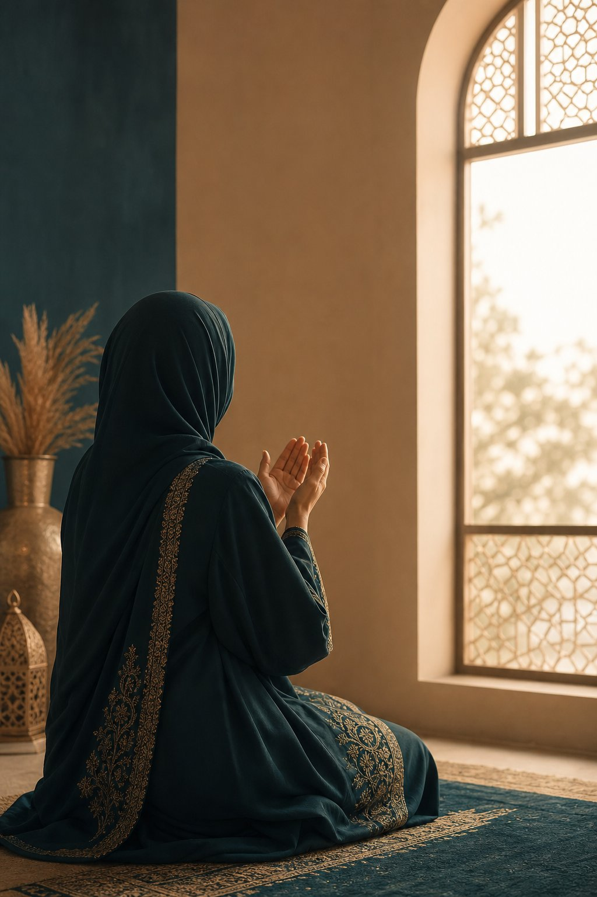
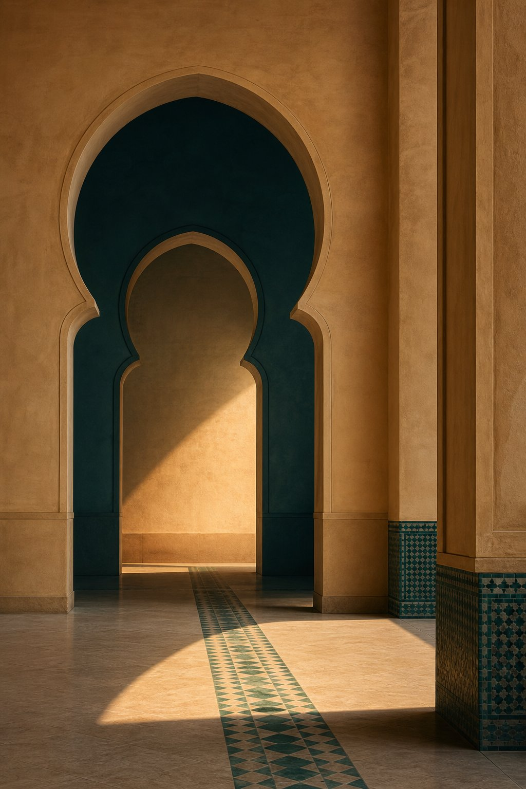

Emotional Intelligence
Anger management · Emotional resolution · Overcoming victimhood
Al Ma'arifa is a mission-driven, non-commercial online institute for women, where behavioural science meets Quranic wisdom.
Al Ma'arifa began as a personal initiative — born from a deep realization that women at every stage of life need a dedicated space for mental clarity, emotional healing, and spiritual grounding. Observing the complex challenges women face in their personal, familial, and daily lives, our founder envisioned a learning refuge that bridges the gap between modern behavioural science and timeless Quranic wisdom. What started as a passion to support and empower women has grown into a mission-driven online institute dedicated to holistic self-transformation.
To equip women across all life stages with practical psychological tools and revelation-based insight, fostering emotional resilience, self-mastery, and spiritual growth.
To cultivate a global community of emotionally grounded, spiritually aligned women who nurture healthy homes and lead purposeful lives.
1. Knowledge.
2. Deep awareness and recognition.
Not information. Recognition. The kind of knowing that changes how you stand in front of your Lord, how you treat your family, and how you understand yourself.
Cognitive · Sharp · Untangling · Seeking clarity. To heal is to untangle. It requires clarity, structure, and the deliberate pursuit of knowledge to navigate our internal pathways.
Spiritual · Fluid · Holding · Finding peace. To nurture is to hold: a continuous, fluid embrace that provides a safe vessel for life and spiritual growth.

Anger management · Emotional resolution · Overcoming victimhood
Time management · Rewiring habits · Seven Habits of a Muslim · Alchemy of Happiness
Seerah of the Prophet · Names of Allah
Parenting · Mentorship · Curating a lasting legacy

Al Ma'arifa is non-commercial. Fees on paid programs are kept deliberately low, and the Quran programs, Ruqyah sessions and individual counseling are free, permanently.